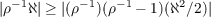
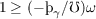
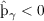

35In more detail: For the second-order Taylor approximation in (125), we implicitly assume that the absolute value of the second-order term is much smaller than that of the first-order one, i.e. . Substituting (126), the above could be simplified to , therefore we have . This simple justification is based on the confidence that we have proved above that RIC and GIC guarantee the denominator of the fraction in (120) is positive.